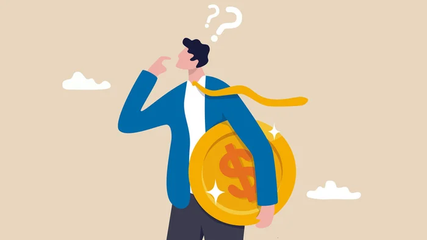

Getting Started

Investing in the stock market can be overwhelming when you're starting out. There could be many questions that you are having as you're thinking about investing. How much should you invest? What happens if my investment goes down? where do you even do this investing stuff on ? Not to worry my friend, I will set you up for the best possible success because I know that if you're in your 20s you probable don't have much money to waste on losses, plus I don't want you to regret investing. You might be suprised but some people never recover from a big loss. After the 2008 stock market crash. There were many people that got out of the stock market for good and swore to never invest in it again. I don't want that to be you because the stock market is a great way to grow your capital if you do it right and you do it safely.
First thing you need in order to invest is a stock brokerage account. A stock broker is a person who fills in the order request of the stock that you are trying to buy or sell. Back in the day it used to be a hassle because you had to call them. However nowadays technology has made things a lot easier for people to buy stocks. You can now use your banking app, or third party trusted app like Wealthsimple or Robinhood. These are the top investing apps that are used today:
Each trading platform is unique and has their own advantages and disadvantages so you need to do your own research before opening any kind of account. For example, some might charge higher fees for buying or selling a stock, Others might give you the option to trade things such as Cryptocurrency and Options which we won't get into because they are more risky and we don't want you to lose your money. I personally have used RBC Direct Investing and Wealthsimple and they're both great, however RBC doesn't offer Cryptocurrency or options trading. Find which platform fits your needs and stick with it.
Stocks & ETFs
So now that you created your brokerage account, you want to jump right into buying stocks. Not so fast, before we can think about buying stocks we need to understand what stocks actually are. When you buy a stock (also called a share) it means that you are buying a portion of the company. That means

The next step is to look at your monthly statements and see where your money is going to and what you can cut down on in your day-to-day expenses. Are you buying coffee every day from Starbucks? make your own coffee at home it costs $0.20 cents to make instead of paying $4 for it at Starbucks. If you have a lot of subscriptions like Netflix, Amazon prime, or Hulu, you might want to consider stopping these subscriptions. Alot of the things that you're paying for online can be found for free if you do some research. Are you eating out a lot or getting food delivered often? Consider buying groceries and making your own meals. If you're a student that doesn't have time to cook everyday, then you can meal prep on the weekend and have ready meals to preheat for the rest of the week. That is what I used to do when I was bodybuilding. You might think that doing all of these minor financial changes wont make a difference but you'd be surprised how much money you'll have at the end of the month when you watch how your money is being spent.
If you do everything you can to save money and you still don't have much to invest at the end of the month then your issue is an income issue. The good news is that you are in your 20s and you have a lot of time to build up your income. If you are working a minimum wage job, you need to learn a skill that can get you a better job and increase your income. In my case I decided to learn Computer Science so that I can write code that can get me a better job. I used to work at a home hardware store that gave me $15 per hour then I got a software engineering internship that paid me $70,000 a year as a second year student which gave me a lot of left over money to invest since I was earning a good income. I also kept my expenses low by living at home and watching every dollar that was being taken out of my account.
You can also look into starting a business as a side hustle while working a job. In my case I started a dropshipping website where I found products for a cheaper price and sold it for more. I also started a landscaping business in the summer and a snow removal buisness in the winter that made me a good amount of money when I was younger. There are lots of ideas that can start a Successful business so get creative and keep in mind to watch your spending. think of your income as a stream of water and your savings is the bucket, your bucket of water won't be filled if there are holes in the bucket.
What Should I Invest In ?
The question of what should I invest in is somewhat of a mystery that hasn't been figured out. Just like Mathew McConnaughy said in The Wolf of Wall Street "I don't care if you're Warren Buffet or Jimmy Buffet, nobody knows if the stock market is gonna go up, down, sideways, or in f******* circles". This is why you should take everyone's advice with a grain of salt and do your own research before jumping into any kind of investment. Otherwise you'll let your losses teach you a lesson, and we don't want that. I would say the biggest advice is to keep up with the news. It will keep you informed of what is happening in the overall economy, some new acomplishments of the top companies, and it keeps you up to date. However there has been some investing ideas and strategies that have stood the test of time and have been proven to have lower risks and more returns. If you want to look more into how to invest, there are two pages at the top that will teach the fundementals of investing in the stock market, and investing in real estate.